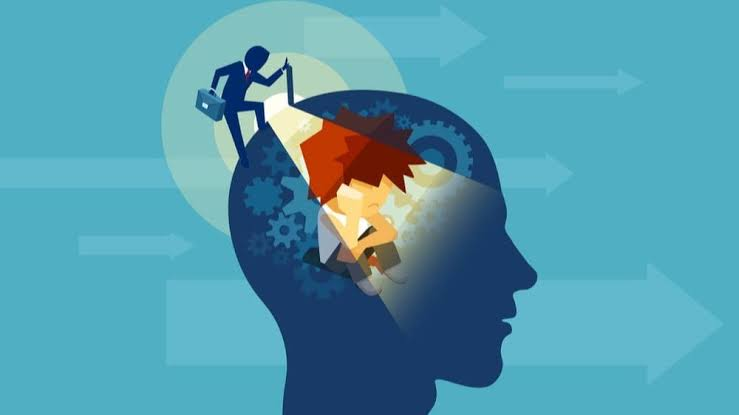

O comportamento humano é o termo que caracteriza a relação de pessoas, animais e até instituições em face do cenário que estiverem incluídos. Ou seja, é o modo de agir das pessoas em face ao seu ambiente, ditando, assim, seu padrão de conduta de acordo com seu grupo social, Desse modo, os padrões sociais influenciam se um comportamento pode ser considerado bom ou mau. Como, por exemplo, se o filho desobedecer, os pais poderão repreendê-lo conforme os padrões sociais que os cercam, como através de um castigo. Assim, saber reagir a cada comportamento é fundamental para se viver em sociedade.
